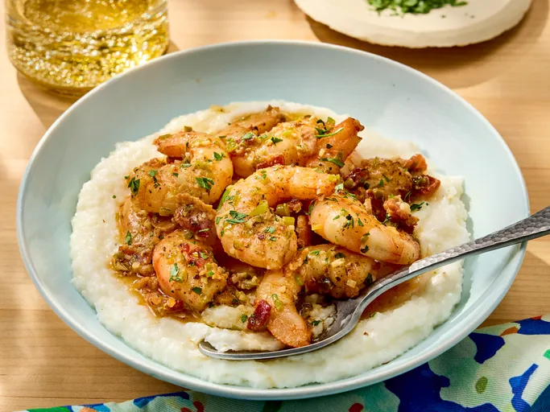

Chef John's Shrimp and Grits

Description
The following description is from allrecipe:
Shrimp and grits are very simple to make for breakfast, lunch, or dinner,
and this recipe is a snap. You can make the grits a
bit ahead since they stay hot for a long time.
Have everything ready before you start cooking the shrimp as they only take a
few minutes to sauté.
This classic Southern meal features the heat of jalapeño, cayenne, and Cajun seasoning.
Reviewers caution against overcooking the shrimp, some removing it early to let the sauce reduce.
"This is absolutely delicious and very easy to execute." —Allrecipes member Nicole Scott
Ingredients
Makes 4 Servings
- 4 strips bacon, cut into 1/4 inch pieces
- 1/4 cup water
- 2 tbsp heavy whipping cream
- Dash of worcestershire sauce
- 4 cups water
- 2 tbsp unsalted butter
- 1 tsp salt
- 1 cup white grits
- 1/2 cup shredded white cheddar cheese
- 1 lb peeled and deveined shrimp
- 1/2 tsp cajun seasoning
- 1/2 tsp salt or to taste
- 1/4 tsp black pepper
- A pinch of cayenne pepper
- 1 tbsp minced jalapeño pepper
- 2 tbsp minced green onion
- 1 tbsp chopped fresh parsley
Steps
- Gather ingredients
- Cook bacon in a large skillet over medium-high heat, turning occasionally,
until almost crisp, 5 to 7 minutes. Transfer bacon to a dish; reserve drippings
in the skillet.
- Whisk 1/4 cup water, cream, lemon juice, and worcestershire sauce
together in a bowl.
- Combine 4 cups water, butter, and 1 teaspoon salt in a pot; bring to a boil.
Whisk in grits; bring to a simmer, reduce heat to low, and cook until creamy,
20 to 25 minutes. Off heat, stir in Cheddar cheese.
- Season shrimp with Cajun seasoning, 1/2 teaspoon salt,
black pepper, and a pinch of cayenne pepper in a large bowl.
- Heat bacon drippings in the skillet over high heat.
Add shrimp; cook 1 minute. Flip shrimp; add jalapeño and cook until fragrant,
about 30 seconds.
- Stir cream mixture, bacon, green onion, and garlic into shrimp mixture;
cook and stir until shrimp cooked through, 3 to 4 minutes, adding water as
necessary to thin sauce. Off heat, stir in parsley.
- Ladle grits into a bowl; top with shrimp and sauce.
Home